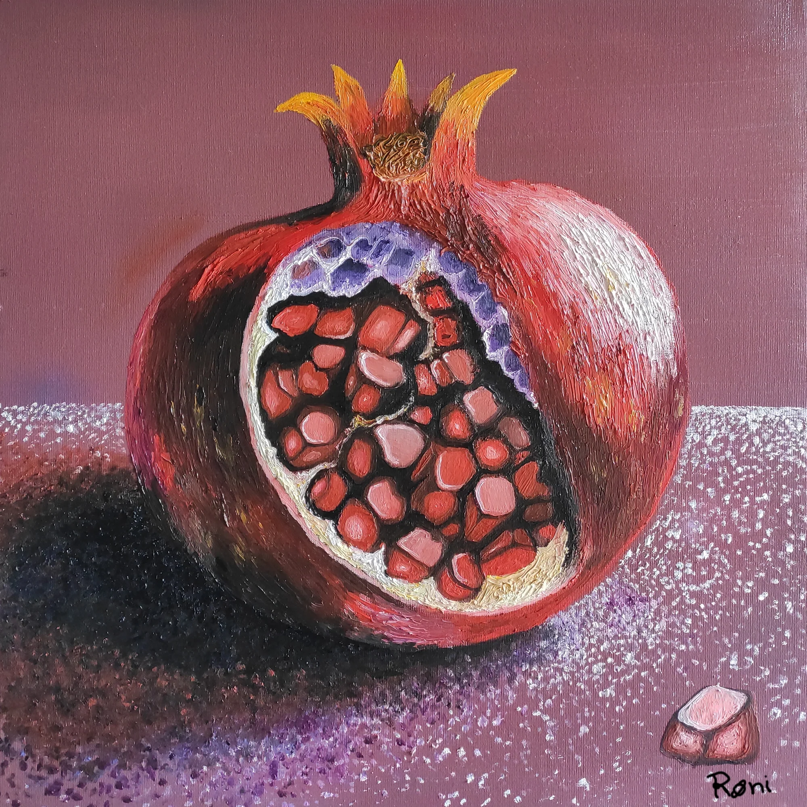
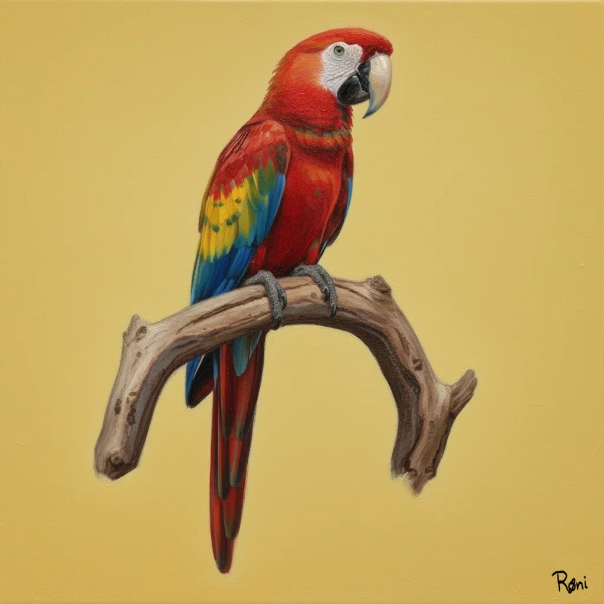
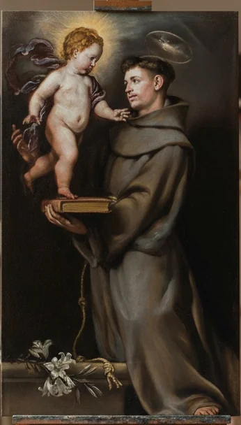

Portfolio
Clique para ampliar
2023

Meisje met de parel
15x20 cm. Reprodução de Vermeer, conhecida como "A Moça com Brinco de Pérola". 2023

Panambi
15x20 cm. Realismo-Art Naif. 2023
2024

Romastone
40X40 cm. As sementes e a casca interna representadas como Rubi e Ametista respectivamente, trazendo um paralelo com a geologia. 2024

Persistência da Memória
30x15 cm. Reprodução de Salvador Dalí. 2024

Ranueuke
50x50 cm. Estudo de surrealismo. 2024
2025

Arara Vermelha
50x50 cm. Ave colorida da região amazônica. 2025

Barbearia I
40X40 cm. Estudo de hiperrealismo para uma barbearia em SP. 2025

Tucano
50x50 cm. Ave colorida da região amazônica. 2025

Carpa Koi
60x60 cm. Peixe ornamental japonês conhecido por sua beleza e simbolismo. Feita para um hotel em SP. 2025

Ruy Barbosa
50x50 cm. Jurista. 2025

Santo Antonio
60x60 cm. Reprodução de Santo Antonio. 2025